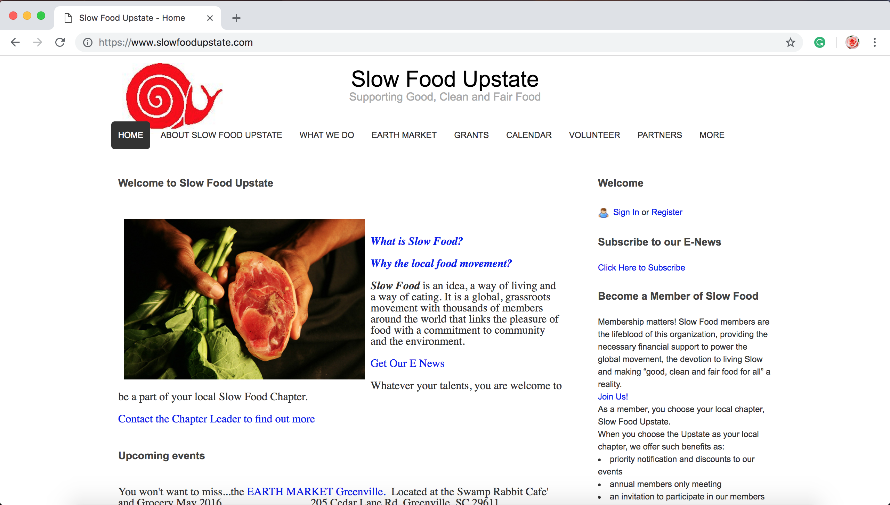

Research
The research portion of this project involved collecting primary and secondary research on and about Slow Food Upstate. I also conducted interviews with individuals who would benefit from what Slow Food Upstate could offer.
Primary Client Research

Research from the Slow Food Upstate Website
The ultimate goal of Slow Food Upstate as an organization is to help farmers and consumers alike learn about the slow food movement and offer resources for them to share and buy. They attempt to communicate this goal primarily through their Earth Market, membership, volunteer options, and educational materials. For this part of the research, I focused on those methods and recognized problems with their presentation on the site.
Membership
Slow Food Upstate offers a membership for those interested in being a part of the slow food movement. Even though membership perks are listed on the site, it is unclear what exactly the user will be getting or contributing to by paying for a membership.
Education
The organization is all about educating the public about the slow food movement and a way they try to accomplish that goal is by providing educational resources for educators and parents. However, the resource material is hard to find on the site and not always a working link.
Volunteers
Slow Food Upstate offers an option to volunteer with them. It is difficult to find what exactly the volunteers will be contributing their time to.
Earth Market
Earth Market is a farmers market held by Slow Food Upstate at The Swamp Rabbit Café and Grocery in Greenville, SC. It is held once a month and offers farmers/growers a chance to sell their produce. The Earth Market also provides a place for the community to go to get in-season, fresh, organic produce.
Earth Market
I think the Earth Market is Slow Food Upstate's strongest resource to utilize. It is a free event to attend, offers fresh, organic produce, is in a well-visited location, and is beneficial to both farmers and the community.
Secondary Research
It was difficult to find much secondary research outside of the Slow Food Upstate parent website, slowfood.com. The bulk of this secondary research came from news articles and blog posts about the slow food movement itself - not the organization.The online article above is a rare exception I found that talked about both the movement and the organization, briefly mentioning the 150 Slow Food chapters around the world.
Since a lot of the secondary sources explained the slow food movement and not the organization, I started to look at sources that talked about the benefits of farmers markets in a community.
Many of the articles presented research as to why so many people were choosing to shop at farmers markets for their fruits and vegetables rather than at grocery stores. Supporting the community and buying fair, locally grown produce is on everyone's minds. And that is what Slow Food Upstate is out to do.
I was trying to stay away from pulling research from the root organization, Slow Food. However, that meant there were not many websites that had that focus or were even similar to it. So what I found was a blog post by She Knows that explained in detail what the slow movement is. It is well organized and clearly presents the information.
I used this blog post as a guideline for the level of clarity I would like the redesigned Slow Food Upstate website to have.
Slow Food in Popular Culture
An interesting facet of this research that I believe could be beneficial to Slow Food Upstate is that the slow food movement is making its way into popular culture.
In the newest season of the Netflix series Chef's Table, Cristina Martinez, a slow food advocate and chef, has an episode all to herself. I believe that introducing advocates of the slow food movement into widely watched shows could promote Slow Food's mission even more. This could translate to the chapter level as well.
 The Slow Food Upstate chapter could ask local chefs, who use the slow food method in their cooking, to give talks at events. That way, the community could learn interesting and efficient ways to prepare the produce they bought from the Earth Market.
The Slow Food Upstate chapter could ask local chefs, who use the slow food method in their cooking, to give talks at events. That way, the community could learn interesting and efficient ways to prepare the produce they bought from the Earth Market.
In my website redesign, I could list guest speakers in an accesible place so that the interested user could learn more about those speakers and where the event would be held.
Interviews
Due to multiple communication issues and failed attempts, I realized I would not be able to speak with anyone directly affiliated with/involved the Slow Food Upstate chapter. I decided to focus on a user demographic that would meet goal criteria and make use of the information Slow Food provides. I interviewed a second grade teacher and my mother, who has been interested in clean eating and local produce for a long time.
Educator and Mother
This link is a screenshot of the full interview with Ellen Oncu, a second grade teacher and single mother of two young children.
This interview was helpful because it showed the perspective of an educator who might want resources to teach her classroom about the slow food movement. An educator could also take her class to an event as a field trip. However, educational resources and information about events were not readily accessible. In addition to the difficulty finding educational resource material, Ms. Oncu expressed the need for more imagery on the site. I recognized a lack of imagery as a definite problem for the current Slow Food Upstate website. There is no imagery of the actual market and so there is no incentive for the user to visit or even begin to be interested.
Mother and Possible Membership Holder
This link is a screenshot of the second interview with Barbara Thompson.
While Ms. Oncu is a candidate for membership as well, Mrs. Thompson would be more likely to chose a membership. If the membership benefits were clarified and, for example, offered a deliverable subscription box of fresh, local produce, she would be inclined to become a member. Mrs. Thompson is the mother of five children, two of which are still at home. She is very busy and does not normally have time to visit a farmers market. But if there was a way for her to access that fresh produce at home, that would be ideal.
Overall, Mrs. Thompson expressed that her initial visit did not compel her to visit the site a second time. She also would like to see/attend family-friendly events to which to take her youngest child. Slow Food Upstate could host tours of the local farms to show the community where fresh and organic produce begins.